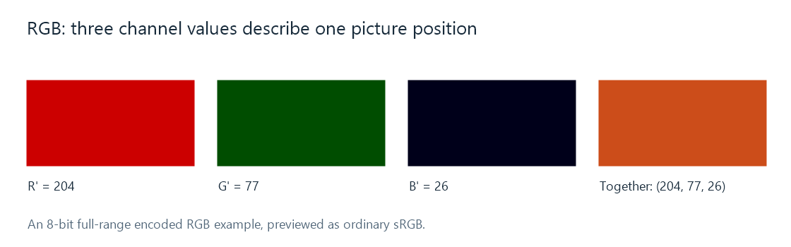

RGB Video
RGB video represents picture positions using red, green, and blue component values interpreted through specified primaries, range, and transfer characteristics.
(204, 77, 26) is a possible 8-bit full-range RGB value at one position in a frame. The first number controls the red component, the second green, and the third blue. With an ordinary sRGB interpretation, that combination appears orange.

The preview uses ordinary sRGB. A video RGB triplet needs its own primaries and transfer information to define the intended color.
The three channels are not three overlaid photographs with independent subjects. They are three coordinates for each picture position. Increasing the green coordinate changes that position's mixture, just as changing one ingredient changes the combined result.
Component values and color meaning
For an unsigned 8-bit full-range representation, each component has values from 0 through 255. There are therefore 256³ = 16,777,216 possible triplets before considering alpha. Some familiar encoded triplets are:
| RGB triplet | Interpretation within the chosen RGB space |
|---|---|
| (0, 0, 0) | Reference black |
| (255, 255, 255) | Reference white |
| (255, 0, 0) | The red primary at its nominal maximum |
| (255, 255, 0) | Red and green together, producing yellow |
| (128, 128, 128) | A neutral encoded gray |
The primaries specify which red, green, and blue these coordinates refer to. The transfer relationship specifies how encoded values relate to light. A triplet halfway up its code range is consequently an encoded midpoint, rather than a statement that the display emits half its reference-white light.
Video range adds another numerical convention: studio-range RGB can use offset black and white codes. RGB describes the components; full range is a separate property.
When arithmetic needs linear light
An operation that mixes light should work with values proportional to light. This matters when a renderer blends an overlay or averages samples while resizing a picture.
In an Emby playback path, a client or server stage can need that calculation when combining a subtitle image with the video. The component values and their transfer meaning establish what is being blended.
Take a deliberately simple transfer model, light = encoded value². Averaging encoded black 0 and encoded white 1 gives 0.5, which represents light 0.25 under that model. Averaging the actual light values gives 0.5, requiring an encoded result of √0.5, approximately 0.707.
The model is an arithmetic illustration, not the sRGB or BT.709 transfer formula. It shows why “RGB processing” needs a further question: encoded RGB or linear-light RGB? The same three component names can appear at both stages, with different numerical meanings.
RGB in a video processing path
A video stored as YCbCr can be reconstructed into RGB for composition and display. An RGB screenshot taken at that point describes the renderer's output representation; it does not establish that the compressed movie was stored as RGB.
The channels can also have several memory layouts. RGB24 commonly stores three adjacent bytes per position; a planar RGB format stores each component in its own region. A four-component format may add alpha for coverage or transparency, which is interpreted during compositing.